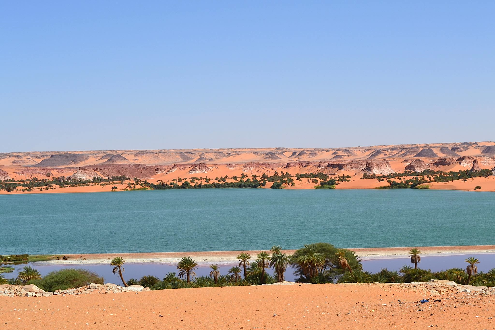
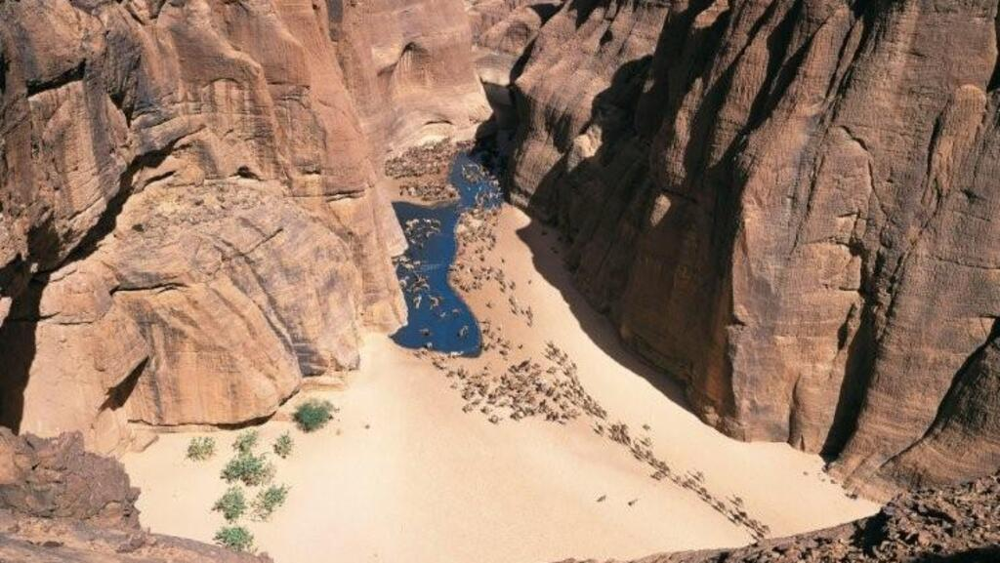
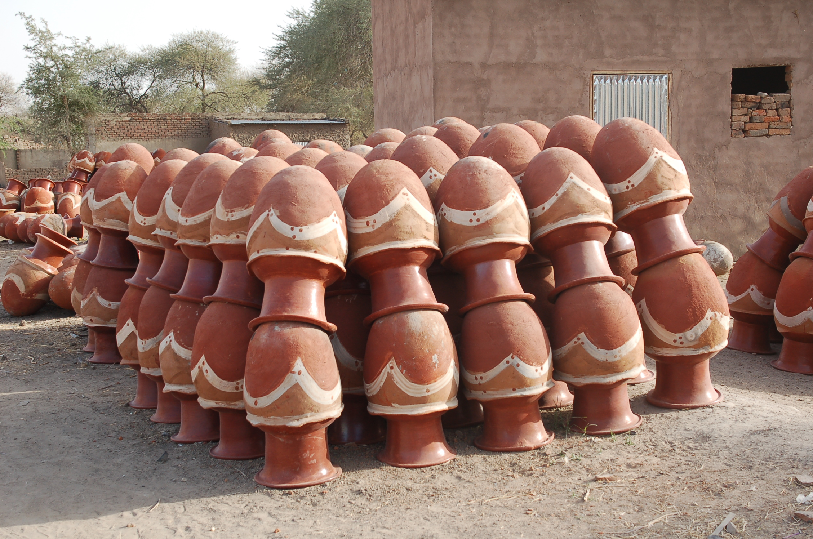
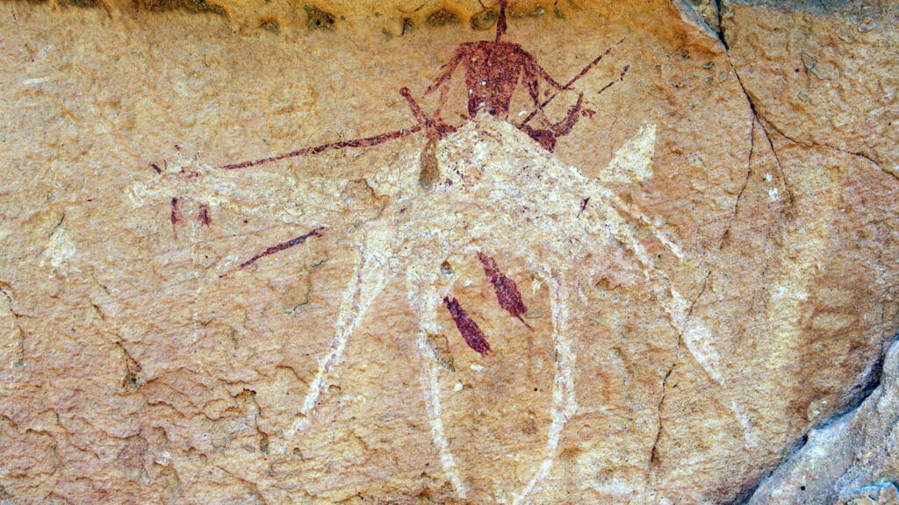
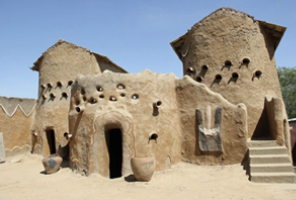

Représentation Officielle en France, UNESCO & OIF
Bienvenue à l'Ambassade du Tchad en France
Passerelle diplomatique, consulaire et culturelle entre le Tchad et la France. Nous accompagnons les ressortissants tchadiens et facilitons vos démarches administratives, de visa et d'investissement.
Patrimoine & Paysages du Tchad







Ambassadrice Extraordinaire & Plénipotentiaire
AMINA PRISCILLE LONGOH
Ambassadrice du Tchad en France
Représentante permanente auprès de l'UNESCO & OIF
Mission Diplomatique Officielle
En savoir plus